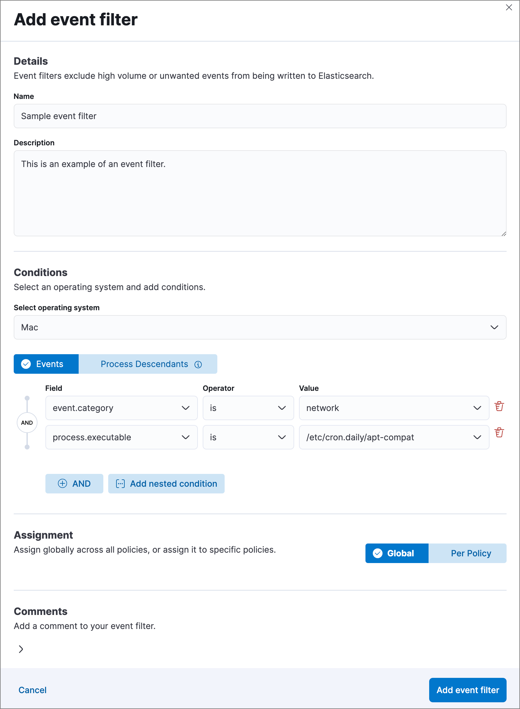

Event filtersedit
Event filters allow you to filter endpoint events that you do not need or want stored in Elasticsearch — for example, high-volume events. By creating event filters, you can optimize your storage in Elasticsearch.
Event filters do not lower CPU usage on hosts; Elastic Endpoint still monitors events to detect and prevent possible threats, but without writing event data to Elasticsearch. To compare event filters with other endpoint artifacts, refer to Optimize Elastic Defend.
Since an event filter blocks an event from streaming to Elasticsearch, be conscious of event filter conditions you set and any existing rule conditions. If there is too much overlap, the rule may run less frequently than specified and, therefore, will not trigger the corresponding alert for that rule. This is the expected behavior of event filters.
By default, event filters are recognized globally across all hosts running Elastic Defend. If you have a Platinum or Enterprise subscription, you can also assign an event filter to a specific Elastic Defend integration policy, which would filter endpoint events from the hosts assigned to that policy.
Create event filters from the Hosts page or the Event filters page.
-
Do one of the following:
-
To create an event filter from the Hosts page:
- Go to Explore → Hosts.
- Select the Events tab to view the Events table.
-
Find the event to filter, click the More actions menu (…), then select Add Endpoint event filter.
Since you can only create filters for endpoint events, be sure to filter the Events table to display events generated by the Elastic Endpoint.
For example, in the KQL search bar, enter the following query to find endpoint network events:event.dataset : endpoint.events.network.
-
To create an event filter from the Event filters page:
- Go to Manage → Event filters.
- Click Add Event Filter. The Add event filter flyout opens.
 -
-
Fill in these fields in the Details section:
-
Name your event filter: Enter a name for the event filter. -
Description: Enter a filter description (optional).
-
-
In the Conditions section, depending which page you’re using to create the filter, either modify the pre-populated conditions or add new conditions to define how Elastic Security will filter events. Use these settings:
-
Select operating system: Select the appropriate operating system. -
Field: Select a field to identify the event being filtered. -
Operator: Select an operator to define the condition. Available options are:-
is -
is not -
is one of -
is not one of -
matches: This is only available for thefile.path.textfield, and allows you to use wildcards inValue, such asC:\path\*\app.exe. Available wildcards are?(match one character) and*(match zero or more characters).Using wildcards in file paths can impact performance. To create a more efficient event filter using wildcards, use multiple conditions and make them as specific as possible. For example, adding conditions using
process.nameorfile.namecan help limit the scope of wildcard matching.
-
-
Value: Enter the value associated with theField. To enter multiple values (when usingis one oforis not one of), enter each value, then press Return.
-
-
To define multiple conditions, click the
ANDbutton and configure a new condition. You can also add nested conditions with theAdd nested conditionbutton. For example, the event filter pictured above excludes events whoseevent.categoryfield isnetwork, and whoseprocess.executablefield is as specified. -
Select an option in the Assignment section to assign the event filter to a specific integration policy:
-
Global: Assign the event filter to all integration policies for Elastic Defend. -
Per Policy(Platinum or Enterprise subscription only): Assign the event filter to one or more specific Elastic Defend integration policies. Select each policy in which you want the events to be filtered.You can also select the
Per Policyoption without immediately assigning a policy to the event filter. For example, you could do this to create and review your event filter configurations before putting them into action with a policy.
-
- Add a comment if you want to provide more information about the event filter (optional).
- Click Add event filter. The new filter is added to the Event filters list.
View and manage event filtersedit
The Event filters page displays all the event filters that have been added to the Elastic Security app. To refine the list, use the search bar to search by filter name, description, comments, or field value.

Edit an event filteredit
You can individually modify each event filter. With a Platinum or Enterprise subscription, you can also change the policies that an event filter is assigned to.
To edit an event filter:
- Click the actions menu (…) for the event filter you want to edit, then select Edit event filter.
- Modify details or conditions as needed.
- Click Save.
Delete an event filteredit
You can delete an event filter, which removes it entirely from all Elastic Defend integration policies.
To delete an event filter:
- Click the actions menu (…) on the event filter you want to delete, then select Delete event filter.
- On the dialog that opens, verify that you are removing the correct event filter, then click Delete. A confirmation message is displayed.